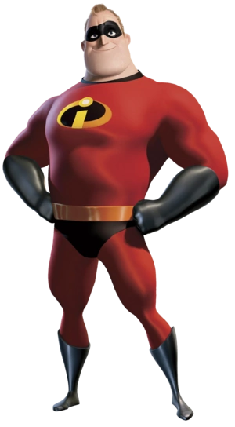

Bob Parr
Robert "Bob" Parr, also known as Mr. Incredible, is a fictional superhero who appears in Disney/Pixar's 6th animated film The Incredibles and its sequel and 20th animated film Incredibles 2. He is a superhuman that has superhuman strength, durability, and stamina.